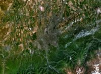

Алматы
Алматы (1921 жылға дейін — Верный; орта ғасырларда — Алмату (Алмалы)) — Қазақстанның ең үлкен қаласы. Ол Тянь-Шань тауларының солтүстігінде, Іле Алатауының баурайында, Қазақстан Республикасының оңтүстік-шығысында орналасқан. Алматыда 1 897 143 адам тұрады (2019)[5]. Алматының ЖІӨ 2010 жылы 18.8 млрд АҚШ долларын, ал жан басына шаққанда 19 мың АҚШ долларын құрап Қазақстанның ЖІӨ бестен бір бөлігін өндіреді.[6]
Климат
Алматыда континенттік климат қалыптасқан. Климаттық жағдайы — желсіз тымық ауа-райы және ауа қабаттарының тау аңғарлары арқылы төмен қарай ығысумен ерекшеленеді. Ең ыстық айлар — Шілде мен Тамыз. Ең суық ай — Қаңтар. Орташа жылдық температурасы шамамен 10 °С кұрайды, қаңтардың орташа температурасы шамамен - 4.7 °С, ал шілдеде +23.8 С°. Аяз қараша айында басталып, сәуірде аяқталады. Қатты аяз 67 күн болады — желтоқсаның 19-і басталып, ақпанның 23-і аяқталады. Ыстық күндер температурасы 30 С° дейін — 36 күн болады. Жылы мезгілде шамамен 600-650 мм жауын-шашын жауады.
Әкімшілік бөлінуі
Алматы қаласы 8 ауданнан тұрады:
- Алатау ауданы
- Алмалы ауданы
- Әуезов ауданы
- Бостандық ауданы
- Медеу ауданы
- Наурызбай ауданы
- Түрксiб ауданы
- Жетiсу ауданы
Ресей отарлауы
1854 жылғы ақпанның 4-інде Іле Алатауының баурайында Ресей империясының әскери қамалы Верныйдың негізі қалануымен қала тарихының жаңа кезеңі басталады. 1854 жылдың күзінде Верный қамалының құрылысы аяқталды. Верный қамалының бір жағы Кіші Алматы өзенінің бойымен орналасқан, ағаштан құрылған бесбұрыш пішінінде салынды. Кейіннен ағаш кірпіш пен таспен ауыстырылды. 1855 жылғы шілденің 1-інде Верный қаласына казактардың бірінші тобы көшіп келді. 1856 ж. орыс шаруалары да көшіп келе бастады. Олар қамал жанынан салынған Үлкен Алматы орталығына қоныстанды. Қоныс аударғандардың көбеюіне орай Кіші Алматы бекеті мен Татар (Райымбек) көшесі пайда болды. Бұл жерге татар қолөнершілері мен саудагерлері қоныстанды. 1859 жылдың мамырында қоныс аударғандардың саны 5 мыңға жетті. Құрылыс жұмыстарына инженер Л.Александровский жетекшілік жүргізді, ал құрылысты басқарған әскери-инженер Ц.Гумницкий болды. 1867 жылғы сәуірдің 11-інде Верный қамалының атауы өзгертіліп, Алматинск қаласы аталды. Бірақ сол жылы «Дала комиссиясының» баяндамасы бойынша қаланың аты Верный болып қайта өзгертілді. Верныйдың қала болуы сол кездегі реформаларға байланысты болды. Верный өзімен аттас Верный уезі мен Жетісу ауданының орталығына айналды.